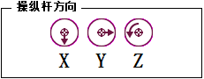
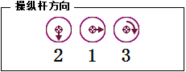
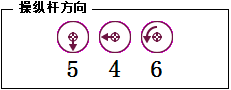

控制杆方向（控制杆方向）系统的轴。
 | 小心 "方向"属性不会显示机械单元将要移动的方向。请始终通过控制杆微小移动来进行微动控制，以便了解机械单元的真实方向。 |
控制杆方向的含义取决于选定的动作模式。
动作模式 | 控制杆图示 | 描述 |
线性 |  | 有关线性模式的说明，请参阅 设置工具方向 一节。 |
轴 1、2 和 3 （机器人默认值） |  | 有关轴 1-3 模式的说明，请参阅逐轴微动控制一节。 |
轴 4、5 和 6 |  | 有关轴 4-6 模式的说明，请参阅逐轴微动控制一节。 |
重定向 | 有关重定向模式的说明，请参阅 设置工具方向 一节。 |